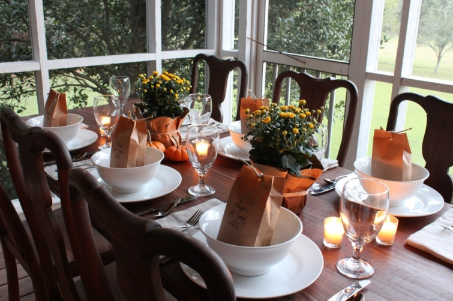
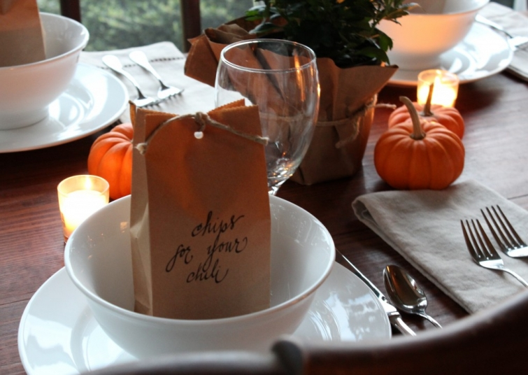

.png)
.PNG)
.PNG)
.PNG)
.PNG)
.PNG)
.JPG)
.JPG)
.PNG)
.PNG)



We normally do chili with all the fixings for Halloween night. It has always been so easy just to leave it on the stove and go trick-or-treating or give out candy here, but when the weather actually turned cool last week I didn’t want to wait until the end of the month. I wanted chili right then. So I decided to make it into dinner-on-the-porch and add a few little extra touches to the meal. If you are doing any entertaining this weekend, it would be a super easy meal to do, and all of it can be made ahead of time.
Here was our menu:
I had some small sized kraft paper bags that I lined with waxed paper, filled with Scoops, and then tied with twine. You could use Fritos if you prefer.

Pumpkins, mums, and candles made up the table decor.
(What else, of course?)

Our wicker side table worked as the serving space to hold all the food. We were out of cornmeal, so I had to leave the mini muffins off our dinner, but you could make them if you are better at planning ahead than I am. 🙂
Mason jars worked very well for holding all the toppings. It seemed easier to me to pour them from the jars on top of the chili in the bowl rather than spoon them out.
We had two kinds of cheese…
chopped green onions, chopped Vidalia onions, and sour cream.
Next time I think I will add some diced jalapeno pepper for those of us who want a little more kick.

The apple salad was a simple one made from chopped apples, celery, and pecans mixed with mayonaise. I’m sure you know a little lemon juice on your chopped apples keeps them from turning brown. Pineapple juice also does the trick.
The chili was a somewhat mild recipe (with a lot of things to chop.)


And now for the best part of this meal – the dessert. 🙂 I cut up Rolo candies, mixed them in a regular brownie mix, (the one with the Hershey’s syrup in the box) topped it with vanilla ice cream, more Rolo pieces, toasted pecans, and finished it all off with an easy but divine chocolate sauce (recipe below.) You NEED this chocolate sauce. I could eat it like chocolate soup…mmmm.

I wanted a very simple chocolate sauce that could be made with the ingredients I had on hand, but every recipe I found had sweetened condensed milk in it, and I was out of that. (Okay yes, I need to go to the grocery store.) I finally discovered this one, and since I had all the ingredients (hallelujah!) I decided to make it. Ready ingredients, unbelievably easy to prepare, and a heavenly chocolate taste…what more could you want?

So now you have what you need for a chili dinner this weekend. If you want to go all out and make it a full chili bar, just add a few baked potatoes and some grilled hotdogs. Whatever you have in store for your weekend, I hope it is a good one!
until next time,


.PNG)
I recently found your blog . . . and LOVE it! Thank you for sharing so many inspirational photos!
———————————————————————
Suzanne – I love getting new readers, so thank you for finding my blog! I am so glad you like the photos.
Kelly
Oh my goodness..that is what I do on Halloween too!!!…I do that for the same reason you gave…you can have it simmering on the stove to eat whenever is convenient…inbetween the rings of the door bell from the Trick or Treaters…We have sometimes over 200 little Trick or Treaters…and many from surrounding neighborhoods….
I love the “bags of chips”…and the ingredients/toppers in the glass ball jars…such a great idea!!….Beautiful table setting! I am so happy that I found your blog!!!
———————————————————————-
Shirley – 200 Trick or Treaters is amazing! You must REALLY have to stock up on the candy. Whoa. Thank you for your nice compliments on the dinner on the porch! I am happy you found the blog, so that you can brighten my day with your sweet comments. 🙂
Kelly
Hi Kelly, Oh, I love your house! I’m inspired to make some changes to mine. Your color choices, antiques, and style are just perfect. I’m a new follower, of course.
——————————————————————–
Anne – Wow! Thank you for all your compliments! I am happy that you like the house and décor. And thank you so much for becoming a follower here!
Kelly
Hi Kelly…visiting from Rhoda’s blog today but quickly added you to my blog roll. Thanks for sharing your ideas with blogdom. I have always loved houses too and I love to “tweak” my own home whenever the spirit moves me. I am a Georgia girl who now lives in Alabama!
————————————————————————
Arlene – Thank you so much for adding me to your blog roll! I have been trying to add some to mine this morning, but my computer widget is not cooperating too well with me today. That’s my next project. I am so glad you came to visit from Southern Hospitality and am hoping to visit new (to me) blogs this afternoon myself. I am an Alabama girl who now lives in Georgia…born in Mobile.:) Enjoy your Sunday!
Kelly
My invite must’ve been lost in the mail! Haha, who wouldn’t want to enjoy this dinner? It was so thoughtfully put together. I love your execution! Hats off to you!
————————————————————————
Corinna – Oh dear, we wish you had been here too!:) Thank you for reading and leaving your nice words for me. I hope the invitation makes it to you next time. 🙂
Kelly
What a great idea! I made turkey chili the other day, when the weather cooled off.
Brenda
———————————————————————–
Brenda – Happy to see your comment here after your wonderful welcome on your site a week ago! I’ll have to give turkey chili a try too for something a little healthier. Thanks for the idea!
Kelly
Love your blog! Everything looks outstanding! I love the wicker stand for your drink dispenser. Where did you find it?? Going to try the recipes too! Have a great weekend!
———————————————————————
Mary – Thank you! That wicker stand came from Pottery Barn. I love it too, AND I got it on sale. 🙂 I hope you will try out the recipes.
Kelly
Kelly
I so enjoyed touring your home and reading your blog. You are very talented. I love your home and all the small touches you have added. I will be looking forward to seeing all the things you do next. I found you through Rhoda, Southern Hospitality feature on your lovely home.
———————————————————————–
Annete – I’m happy Rhoda led you over to my blog and that you enjoyed the posts! Please come visit here again.
Kelly
yet another Southern Hospitality follower but love your blog and that mason jar idea is brilliant! Welcome to blogland and I already love what I have seen. Hope you stop by my blog as well and we can all share wonderful decorating and entertaining ideas.
———————————————————————
Diane – Love mason jars! Thank you for coming over from Rhoda’s site. I will check out yours today. I’m meeting so many new bloggers thanks to Rhoda!
Kelly
Hi Kelly,
I’m another Southern Hospitality follower. Don’t you just love Rhoda and her family AND her wonderful decorating ideas. She is amazing and so are you. I am so happy she featured your home on her blog. What a treat to see your beautiful home. I can’t wait to check out your entire site. Thanks so much for sharing it with us.
HAPPY HALLOWEEN!!!
————————————————————————
Sylvia – Rhoda IS wonderful! (I can’t thank her enough for sending all you great folks over here.) And thank you for all your nice compliments. I hope you enjoy looking around the site.
Kelly
I “found” you today on Rhoda’s Southern Hospitality blog. I love your home and how you have decorated it to make it your own. Looking forward to following you!
——————————————————————–
Susan – Thank you for coming over from Rhoda’s and for reading so many of my posts here. I’m happy you are going to be following!
Kelly
I found you from the Feature Friday @ Southern Hospitality: I’ve been stalking your blog & pinterest pins ALL day! You have a lovely home ~ very warm & inviting!!
I’ll be following you now. Thanks for sharing!!
———————————————————————–
Paula – I’ll have to thank Rhoda for sending me a sweet stalker! 🙂 I’m glad you liked the house (and my pinterest boards!) Thank you for being a new follower.
Kelly
Hello! I am visiting from your feature on Rhoda’s blog. Your home is gorgeous and filled with so many things I like. I love your ideas for the chili dinner!
———————————————————————-
Jane – Rhoda has sent me a lot of nice readers! So glad you liked the house and the chili ideas. I hope you can use some of them.
Kelly
Found your blog while reading Southern Hospitality, and decided I wanted to see more. I can tell already I will be back. Thanks for the inspiration.
———————————————————————–
Kathi – I’m glad I could give you some ideas, and I hope you will be back soon!
Kelly
I don’t have a blog… (yet..lol ) but I do love to follow some amazing bloggers such as Rhoda over at Southern Hospitality… and today … what a nice treat!!! This is my first visit to your place!! Gorgeous home…. love, love the porches!! Thank you so much for sharing …. I will enjoy future posts!!!! Terri
————————————————————————-
Terri – So glad you jumped over here from Southern Hospitality! I can’t tell you how many times I wrote your exact first sentence before leaping into this. 🙂 I’m happy you liked the porches. I don’t think I’d ever build a house without one!
Kelly
Hi there. I came over from Southern Hospitality (Rhoda’s blog). Loved your pretty porch. My blog started in April, too, but whoa….you are so far ahead of me. Come visit some time. I’m in the midst of a small Annie Sloan paint project which I hope will turn out!!
Eva
————————————————————————-
Eva – Thanks for coming over! I’ll have to check out your new blog. I hope your Annie Sloan paint project is a success. I haven’t tried it yet, but I have a piece in mind for my experiment with it.
Kelly
Kelly – Your tablescape is beautiful, your recipes sound great and your home is really cozy and pretty. I came over from Rhoda’s blog.
Judy
———————————————————————
Judy – Thank you for making the jump over from Southern Hospitality and for being so sweet to leave your kind words.
Kelly
Kelly,
What a great dinner and ideal for entertaining friends this time of year. I loved the idea of the brown paper bags with the scoops or fritos in them. Your chili recipe looked delicious and I’m ready for a bowl right now, but can I still have dessert if I don’t finish my dinner?! That dessert looked outstanding. I will have to prepare that recipe in the not too distant future. Very pretty presentation and table setting.
Have a wonderful weekend.
Karen
——————————————————————-
Karen – You may certainly have dessert if you don’t finish your dinner. In fact you can start with dessert if you’d like! 🙂
Kelly
Rhoda’s blog brought me here to view more of your wonderful home and lifestyle. I’ve enjoyed perusing your blog. Sally
——————————————————————–
Sally – I’m happy you made the jump from Rhoda’s AND that you left your sweet words in the comments.
Kelly
Hey there! Found your blog while reading Southern Hospitality. I’m also from the middle Georgia area! Wilcox County, to be exact. I love finding other bloggers from Georgia 🙂
Your home is absolutely beautiful and you’ve really inspired me..and the chips in the brown paper bags is such a cute idea! We have chili alot at our get-togethers in the fall! It’s pefect for football tailgates or house parties…which we have almost EVERY Friday night..lol!
So glad you joined the blog communtiy….I’ll be back for more reading and viewing pleasure 🙂
————————————————————————-
Lynn – Hello fellow Georgia girl! Thank you for all your sweet compliments! You are right. Chili is great for tailgate parties! Please do come back again.
Kelly
Kelly,
I don’t know what I like the best…the yummy food or the beautiful tablescape…oh my…it all looks outstanding. Thanks for the recipes:)
Blessings,
Linda
————————————————————————
Linda – You are welcome for the recipes. Thank you for visiting the blog and leaving your nice comments!
Kelly
Yum!!! Gorgeous table too. I so need to do this!
————————————————————————
Amanda – Thank you! I am glad you liked the meal and the table. Hope you get your chili dinner done!
Kelly
First time here and oh, do I love your blog design! And how you put the toppings into the glass jars. It reminds me that just a little extra thing, like the twine and the tags, make all the difference in homemaking and hosting. Thanks for inspiring me!!
——————————————————————-
Dagmar – Thank you VERY much for your comment on the blog design! I worked 6 weeks on it after a year of trying to decide how to go about doing it, so I do appreciate your compliment. I am glad you liked the little details of the dinner. It is those little extras that are fun to do to me. I am happy I could give you some inspiration.
Kelly
This table setting and dinner looks wonderful. I just browsed you home on Southern Hospitality and am in love. You are living in my dream home that will not happen. I will just dream through you. Now I need to go look around some more.
———————————————————————-
Kim – Thank you for your very sweet words about our home. I’m so happy Rhoda sent you over here. Please look around the blog all you want!
Kelly
Hi Kelly! Yes, chili was on our menu last weekend as well. Along with mini corn muffins and a chocolate desert! Great minds! Need to try your dessert — the one I made was “My Granny’s Chocolate Cobbler” — I found it on “Tasty Kitchen” and would love to give kudos to the chef, but not sure how to do that here. Not trying to take credit for the recipe myself, but give it a try — super easy and delish! I love how you put your condiments in mason jars — so cute! Your table is lovely with all your special touches. You are making me feel so lazy — we are semi-empty nesters this year, having our youngest daughter go off to college. It’s been an adjustment to say the least and I feel like now that it’s just the two of us,(well, I’m a little lonely, too), that I just don’t go through all the bother that I used to. But, I can see that sitting down at a table like yours would definitely make a difference! Going to try to do more special touches myself — thank you for the inspiration.
————————————————————————
Genny – I will definitely check out the chocolate cobbler – sounds delicious! I’m glad you were able to get some inspiration here. Our youngest started college too, but our middle child is here is here for awhile. We’re “almost” empty nesters.
Kelly
Hi Kelly! Visiting from Rhoda’s and looking forward to browsing your blog — you have a lovely home!
Heidi @ Decor & More
——————————————————————–
Heidi – So glad you hopped over from Rhoda’s. I’m happy you like our home. Please come to visit again!
Kelly
Hello, I am new to your blog. Wow, love it so far! You make me want chili right now….and dessert. Your home is beautiful and I can’t wait to see more. Thanks for letting us into your home!
———————————————————————
Lisa – You are very welcome! I’m so glad you found the blog and took the time to read and leave a sweet comment. Thank you!
Kelly
You told me this would be a food posting, and I’m so glad I came on to check it out. Everything looks delicious and your table looks fabulous. I will definitely be making this dessert ASAP!!
———————————————————————-
Kayleigh – I am glad you liked it. I had you in mind with the chocolate sauce. I know you will make something heavenly with it. (So please share!)
Kelly
your chili looks devine kelly! my daughter makes the best i’ve ever tasted and made some a few weekends ago. it’s in the 40’s here this morning so i think it’s about time i get a pot made around here.
i’ll definately have to try that chocolate sauce although my husband has put me on dessert restriction b/c he says he’s eating waaay too much when i make dessert!
——————————————————————–
Judy – Oh no! Not dessert restriction! Leave off something else, but keep your desserts. LOL
Kelly
This looks so appetizing. I love the mason jar idea. Very handy. All the little spoons a bowls never work. And the desert. OMGosh. My mouth is literally watering. You are a bad girl.
———————————————————————-
Rebecca – I love using mason jars whenever I can, and yes, I am a bad girl when it comes to chocolate. Dessert is always more important than the main course, right? 🙂
Kelly